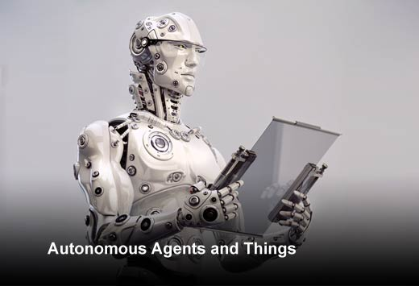

Back
Consulting Service
Consulting Services
About Consulting;
1.Blockchain

What is blockchain technology?
Blockchain is the backbone of a new type of internet which was devised from the digital cryptocurrency, Bitcoin. It now has many potential uses for technology. It was invented by a person using the name Satoshi Nakamoto in 2008.
“The blockchain is an incorruptible digital ledger of economic transactions that can be programmed to record not just financial transactions but virtually everything of value.”
Don & Alex Tapscott, authors Blockchain Revolution (2016)
Blockchain is decentralized. This means it is not stored in one central point and instead is spread across many locations. This makes it more difficult to break into a single device or steal information. There are many different blockchains, storing different types of information. You can have a blockchain recording money or recording identities. Literally any type of information can be stored. The data that is recorded on a blockchain is copied onto many different devices that are connected to each other to form a network. Whenever any new information is added, all of the devices are updated through these computer programs.
2.Autonomous Things (Robots)

What are Autonomous Things?
The emergence of Autonomous things (robots) into the market over the last few years has been an exciting development within the world of technology. Driven by the development of AI and cloud technologies I believe we are only going to advance and become more innovative in the near future.
The developments have brought computers into the physical environment as entities without human interference, are freely moving and can also interact with humans. It is expected that the first mass development of AuT technologies will be the autonomous car. Tesla was the first to release this with the ‘Model X’.
3.Immersive Experience
What is an Immersive Experience?
Immersion into virtual reality is the perception of being present in a non-physical world. It is an illusion that completely surrounds you so that you feel you are inside of it.
It is created by surrounding the user with sounds, images and other stimuli that provide an engrossing environment. There are two types of immersive experiences, one where you are in the physical environment and another where you are shown around one by a VR headset, mobile or tablet. 360° Video or 360° Photography create environments that have been digitally captured from the real world., allowing the user to be placed inside and to feel a part of the captured moment from a more passive perspective.
Go to IOS Home page